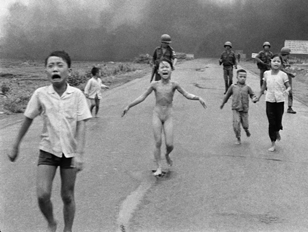

I. Tư Liệu Chiến Tranh
Một phụ nữ Việt khóc ngất bên thi thể chồng, được tìm thấy trong một ngôi mộ tập thể cùng 47 người khác gần Huế, tháng 4/1969.
Một trực thăng Mỹ đáp xuống đỉnh đồi tại Dak Tô, với những hàng cây cháy rụi vì đạn pháo, ngày 3/8/1968.
Một máy bay vận tải C-123 của Mỹ bốc cháy khi đang chạy trên đường băng do trúng đạn cối của quân giải phóng trong trận chiến Khe Sanh, ngày 1/3/1968.
Một trực thăng Mỹ đáp xuống đỉnh đồi tại Dak Tô, với những hàng cây cháy rụi vì đạn pháo, ngày 3/8/1968.
Các thi thể nạn nhân bị sát lính Mỹ sát hại chất đầy trên con đường dẫn vào một ngôi làng ở thôn Mỹ Lai, thuộc làng Sơn Mỹ, huyện Sơn Tịnh, tỉnh Quảng Ngãi ngày 16/3/1968.
Người dân phía Tây Nam Sài Gòn tháo chạy ngày 7/5/1968, sau khi các cuộc đụng độ với vũ khí hạng nặng nổ ra giữa quân giải phóng và binh sỹ chính quyền Sài Gòn.
Hai em nhỏ đứng trước những gì từng là ngôi nhà của họ, cách Sài Gòn chừng 65km về phía Tây Bắc, ngày 14/6/1969. Toàn bộ khu vực đã bị đạn pháo của chính quyền Sài Gòn san phẳng hòng đẩy lùi quân giải phóng.
Rất nhiều người Mỹ, bao gồm các cựu chiến binh từng tham chiến đã tham gia biểu tình phản chiến tại đồi Capitol, ở Washington ngày 19/4/1971.

Nhiều binh sỹ chính quyền Sài Gòn theo sau những em nhỏ đang khóc vì hoảng sợ, trong đó có bé Kim Phúc, 9 tuổi (giữa), chạy trên tuyến đường gần thị xã Trảng Bàng, Tây Ninh sau khi những quả bom na-pam được thả xuống nơi nghi có quân giải phóng ẩn náu, ngày 8/6/1972.
Những người dân và binh sỹ bị thương nhẹ cố tìm cách leo lên một chiếc trực thăng của chính quyền Sài Gòn để di tản, tại khu vực An Lộc ngày 25/6/1972.
Cảnh sát chính quyền Sài Gòn bịt mắt một phụ nữ bị nghi là thành viên của quân giải phóng bị bắt ngày 26/10/1972. Người này mang theo 15 quả lựu đạn trong trận chiến đêm trước đó tại Đà Nẵng.

Cờ Mỹ được hạ khỏi căn cứ tại Long Bình, cách Sài Gòn chừng 30km về phía Đông Bắc, để bàn giao căn cứ cho quân đội chính quyền Sài Gòn, ngày 11/11/1972. Đã có thời điểm đây là căn cứ Mỹ lớn nhất tại Việt Nam với 60.000 quân, năm 1969.
Dòng người bám đen trên cầu thang lên mái một ngôi nhà gần đại sứ quán Mỹ với hy vọng kịp lên trực thăng di tản.
Hàng trăm phương tiện di tản thuộc đủ chủng loại đậu đầy một bãi đất trống, gần thị xã Tuy Hòa, Phú Yên, ngày 23/3/1975, sau khi tháo chạy từ Ban Mê Thuột và các khu vực khác ở Tây Nguyên
Trong phiên họp chung của quốc hội chính quyền Việt Nam Cộng Hòa, ngày 28/4/1975, Tổng thống Trần Văn Hương bị đề nghị bàn giao quyền lực cho tướng Dương Văn Minh, trong nỗ lực cuối cùng nhằm tìm cách đàm phán với quân giải phóng.
Binh lính chính quyền Sài Gòn và các phóng viên phương Tây chạy để tránh đạn, sau khi đạn cối của quân giải phóng rơi xuống trên cầu Tân Cảng, ngày 28/4/1975.
Cảnh sát chính quyền Sài Gòn đụng độ với hàng trăm người biểu tình chống chính quyền, tìm cách tuần hành từ ngoại ô vào nội đô, ngày 31/10/1974.
Tù binh chiến tranh, Trung tá Robert L. Stirm được gia đình chào đón khi trở về quê nhà ngày 17/3/1973.
II. Chia Sẻ Sách
Lịch Sử Chính Trị
Chiến Thắng Bằng Mọi Giá
Lịch Sử Chính Trị
Nhật Bản Cận Đại
Lịch Sử Chính Trị
Chiến Tranh Thế Giới
Lịch Sử Chính Trị
Trăm Năm Trong Cõi Một
Sách Nói
Cuốn Sách Cho Người Nhạy Cảm
Sách Nói
Những Câu Chuyện Hay Nhất 1
Sách Nói
Những Câu Chuyện Hay Nhất 2
Sách Nói
Tìm Mình Trong Thành Phố Nội Tâm
Sách Nói
Chìa Khóa Vàng Cho Sức Khỏe
Tâm Lí - Kĩ Năng Sống
Sổ Tay Tâm Lí Học
Tâm Lí - Kĩ Năng Sống
Nghệ Thuật Giao Tiếp Phi Ngôn Ngữ
Tâm Lí - Kĩ Năng Sống
Đắc Nhân Tâm
Y Học - Sức Khỏe
Bộ Hải Thượng Y Tông Tâm Lĩnh 1
Y Học - Sức Khỏe
Bộ Hải Thượng Y Tông Tâm Lĩnh 2
Y Học - Sức Khỏe
Bộ Hải Thượng Y Tôn Tâm Lĩnh 3
III. Đọc Sách

Hồi Ức - Tùy Bút
Lịch Sử Đức Quốc Xã

Hồi Ức - Tùy Bút
Đằng Sau Những Nụ Cười

Hồi Ức - Tùy Bút
Tư Tưởng Hồ Chí Minh

Phiêu Lưu Mạo Hiểm
Hỏa Kiếm

Phiêu Lưu Mạo Hiểm
Người Cá

Phiêu Lưu Mạo Hiểm
Biểu Tượng Thất Truyền

Cổ Tích Thần Thoại
Truyện Kể Tây Tạng

Tâm Lí-Kĩ Năng Sống
Ngày Xưa Có 1 Con Bò

Kinh Tế Quản Lí
Xây Dựng Để Trường Tồn

Kinh Tế Quản Lí
Thị Trường Chứng Khoán

Tiểu Thuyết Trung Quốc
Trảm Long
Trợ Giúp
Vui lòng nhấn vào biểu tượng Email me để liên hệ với nhân viên tư vấn.